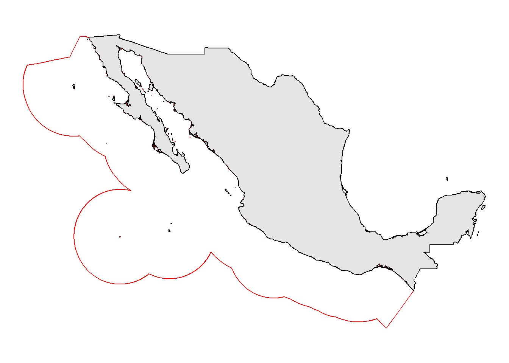
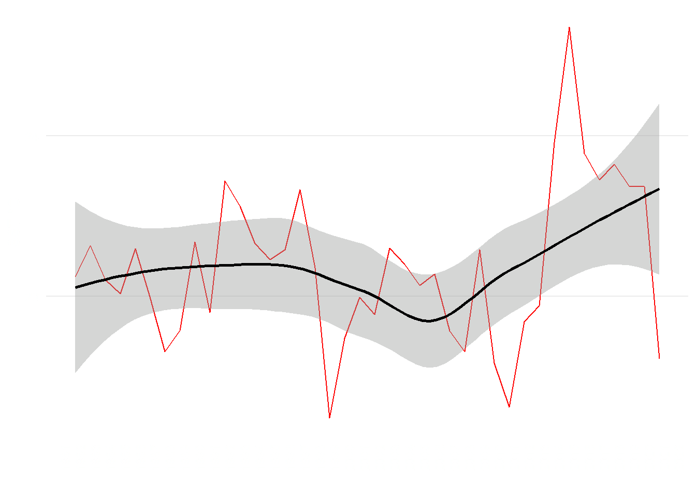
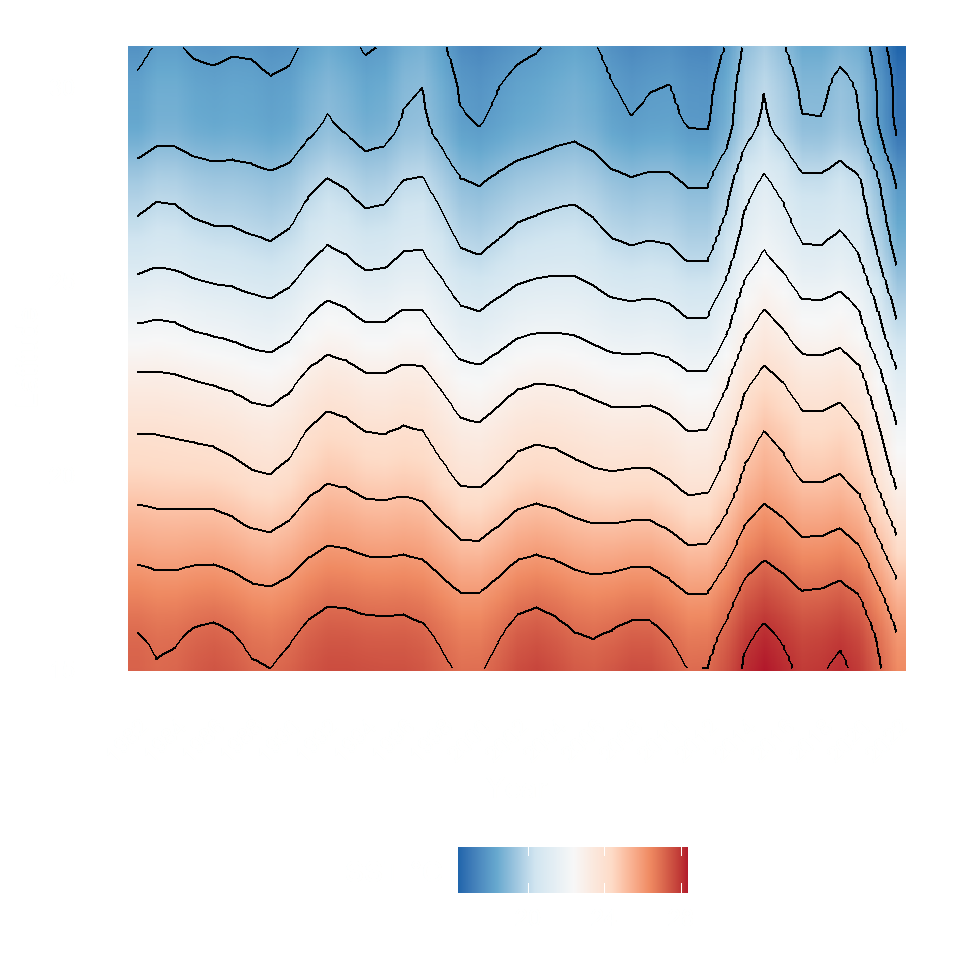
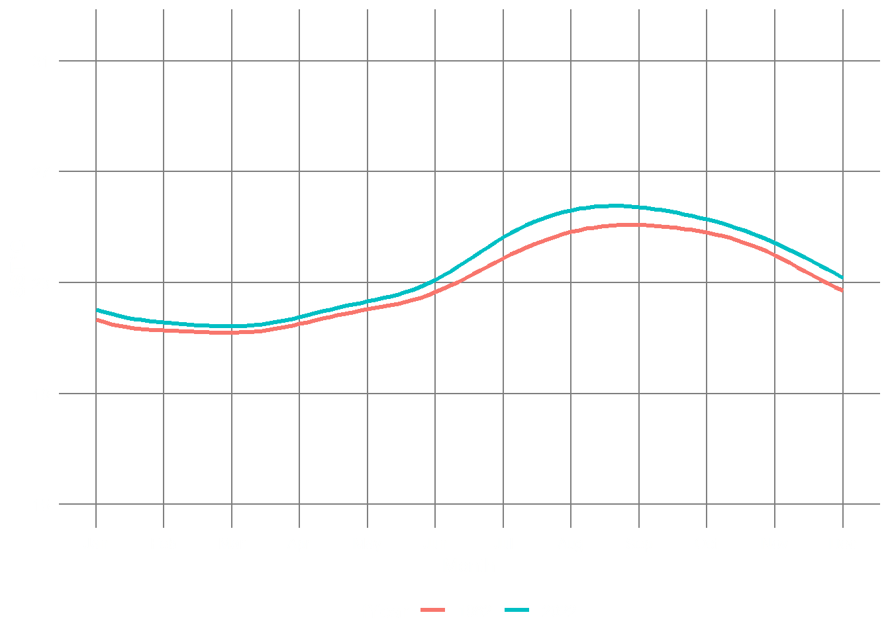
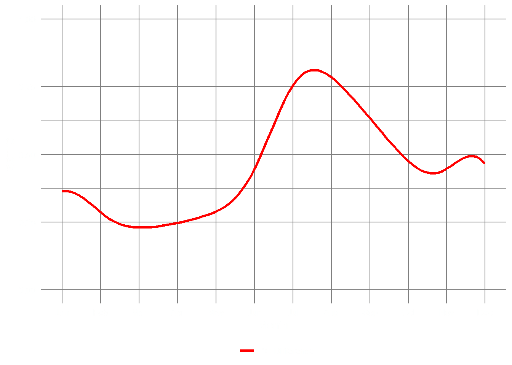
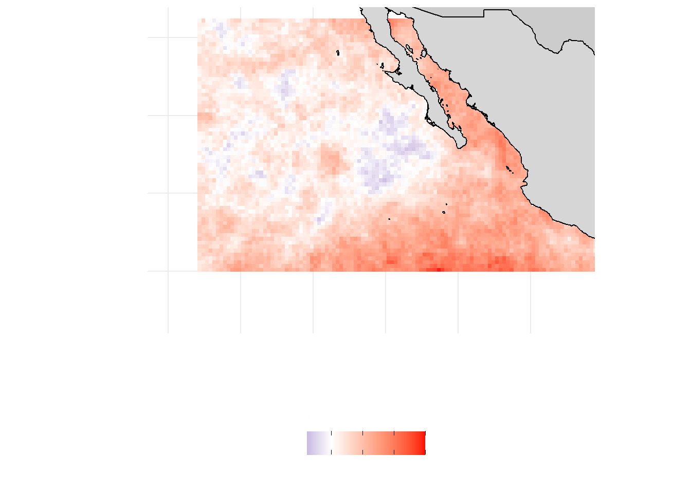
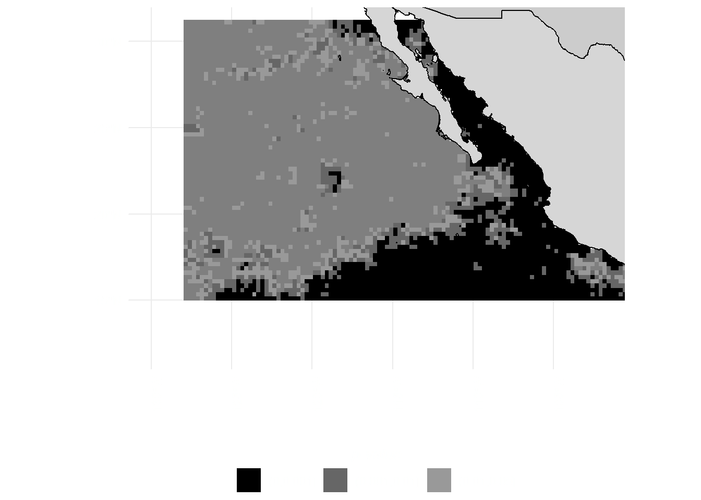

Code
library(tidyverse)
library(sf)
library(patchwork)
library(fst)
library(lubridate)
library(mgcv)
library(gratia)Fabio Favoretto, Eduardo León Solórzano
October 15, 2022
The Patrick McGovern foundation accelerator grant allowed us to explore the environmental data of the Mexican Pacific in an unprecedented way. Understanding the environmental changes to a greater resolution (meaning larger data, thus more computation needed) is critical to link it to other variables, from biological to anthropogenic. The ultimate goal of our project is to understand how industrial fishery is responding to environmental changes to predict future scenarios. In this section, we explore the environmental variability of the Mexican Pacific ( Figure 1 ), calculate its trends, and analyse the extreme events that characterized the area.

The first key parameter to explore is Sea Surface Temperature (SST) overall trend over time. A large warming event can be seen from 2014 to 2015 ( Figure 2 ), with high average temperatures 1°C above the historical average. The temperature increase was caused by a particularly intense El Niño event which created abnormally warm waters in the Pacific. A phenomenon dubbed “the blob” caused environmental problems all over the North American coast.
sst <- read_fst("../../../tropicalization_in_the_GOC/data/full_oisst_pacific_data.fst")
sst %>%
mutate(year = year(t)) |>
group_by(year) |>
summarise(temp = mean(temp)) |>
mutate(year = as.Date(paste0(year, "-01-01"), "%Y-%m-%d")) |>
ggplot(aes(x = year, y = temp)) +
geom_line(col = "red") +
geom_smooth(col = "black") +
scale_x_date(date_breaks = "1 year", date_labels = "%Y") +
labs(x = "", y = "SST °C") +
theme_minimal() +
theme(panel.background = element_rect(fill = NA, color = NA),
axis.text.x = element_text(angle = 90),
panel.grid.minor = element_blank(),
panel.grid.major.x = element_blank(),
text = element_text(colour = "white"),
axis.text = element_text(colour = "white")
)
Our study area is no exception, and the large warming event continued from 2014 to 2019. A decrease in average sea surface temperature occurred only in 2021 ( Figure 2 ).
However, SST not only varies over time, but such variation can be of different intensities depending on the latitude. We can analyze latitude degree as a covariable along with time to understand how space influences SST variation. We can see from Figure 3 that SST has increased all over the latitudinal gradient, in particular, larger peaks can be seen in northern latitudes during the warming event.
mod_data_lat <- sst |>
group_by(t, lat) |>
summarise(Temperature = mean(temp)) |>
mutate(Year = year(t), nMonth = month(t)) |>
group_by(Year, lat) |>
summarise(Temperature = mean(Temperature))
fullM_sst <- bam(
Temperature ~
t2(
Year,
lat,
bs = c("tp", "tp"),
k = c(20, 20),
m = 2
),
correlation = corARMA(form = ~ 1 | Year, p = 1),
data = mod_data_lat,
method = "REML"
)
new_data <- data.frame(lat = rep(seq(from = 15, to = 31, by = 0.1), each = 41),
Year = rep(seq(from = 1982, to = 2022, by = 1), 161))
pred_paci <- predict(fullM_sst, new_data)
(
year_plot <- new_data |>
ggplot(aes(
x = Year,
y = lat,
z = pred_paci,
fill = pred_paci
)) +
geom_raster(interpolate = TRUE) +
geom_contour(col = "black") +
labs(fill = "SST °C", y = "Latitude") +
scale_x_continuous(breaks = seq(1982, 2022, by = 2)) +
scale_fill_distiller(
palette = "RdBu",
direction = -1,
type = "div"
) +
theme_minimal() +
theme(
panel.grid = element_blank(),
legend.position = "bottom",
plot.title = element_text(face = "italic"),
axis.text.x = element_text(angle = 45, hjust = 1),
legend.title = element_text(vjust = .8),
text = element_text(colour = "white"),
axis.text = element_text(colour = "white"),
panel.background = element_rect(fill = NA, color = NA)
)
)
Such a pattern ( Figure 3 ) suggests that areas at higher latitudes can warm faster, and organisms that inhabit them can be relatively more threatened as they evolved in lower temperature regimes (Cheung, Watson, and Pauly (2013); (cheung2010?)) .
To model how seasonality has changed, i.e. how variation in monthly temperatures occurred from 1982 to 2022 Figure 4, we used generalized additive models described in the methods section of this site.
sst_model <- sst %>%
mutate(Year = year(t),
nMonth = month(t),
fDegree = factor(round(lat, 0))) %>%
group_by(Year, nMonth) %>%
summarise(Temperature = mean(temp))
knots <- list(nMonth = c(0.5, seq(1, 12, length = 10), 12.5))
m_23 <- gamm(
Temperature ~ te(Year, nMonth, bs = c("cr", "cc"), k = c(20, 12)),
data = sst_model,
method = "REML",
correlation = corARMA(form = ~ 1 | Year, p = 1),
knots = knots
)
pdat <- with(sst_model,
data.frame(
Year = rep(c(1982, 2022), each = 100),
nMonth = rep(seq(1, 12, length = 100), times = 2)
))
pred <- predict(m_23$gam, newdata = pdat, se.fit = TRUE)
crit <- qt(0.975, df = df.residual(m_23$gam)) # ~95% interval critical t
pdat <- transform(
pdat,
fitted = pred$fit,
se = pred$se.fit,
fYear = as.factor(Year)
)
pdat <- transform(pdat,
upper = fitted + (crit * se),
lower = fitted - (crit * se))
p1 <- ggplot(pdat, aes(x = nMonth, y = fitted, group = fYear)) +
geom_line(aes(colour = fYear), size = 1.2) + # predicted temperatures
labs(y = "SST°C",
x = "Month",
title = m_23$fDegree) +
scale_fill_viridis_d() +
scale_x_continuous(breaks = 1:12,
labels = month.abb,
minor_breaks = NULL) +
scale_y_continuous(
breaks = seq(15, 32, by = 4),
limits = c(15, 32),
minor_breaks = NULL
) +
theme_minimal() +
theme(
panel.background = element_rect(fill = NA, color = NA),
axis.text = element_text(colour = "white"),
panel.grid = element_line(colour = "gray50"),
legend.position = "bottom",
text = element_text(colour = "white"),
legend.margin = margin()
)
pred <- predict(m_23$gam, newdata = pdat, se.fit = TRUE)
crit <- qt(0.975, df = df.residual(m_23$gam)) # ~95% interval critical t
pdat <- transform(
pdat,
fitted = pred$fit,
se = pred$se.fit,
fYear = as.factor(Year)
)
pdat <- transform(pdat,
upper = fitted + (crit * se),
lower = fitted - (crit * se))
p2 <- pdat %>%
pivot_wider(nMonth, names_from = Year, values_from = fitted) %>%
mutate(diff = `2022` - `1982`) %>%
ggplot(aes(x = nMonth, y = diff)) +
geom_line(aes(col = "°C Difference"), size = 1.2) +
scale_color_manual(values = "red") +
scale_x_continuous(breaks = 1:12,
labels = month.abb,
minor_breaks = NULL) +
labs(
y = "SST°C",
x = "Month",
color = "",
title = m_23$fDegree
) +
ylim(0, 1) +
theme_minimal() +
theme(
panel.background = element_rect(fill = NA, color = NA),
panel.grid = element_line(colour = "gray50"),
axis.text = element_text(colour = "white"),
legend.position = "bottom",
text = element_text(colour = "white"),
legend.margin = margin()
)
p1
p2 

Over the Mexican Pacific, summer has been 0.75 degrees Celsius higher than historical ones ( Figure 4 (b) ), and the increase in temperature that starts the summer season was anticipated by two weeks from mid-June to starting June. Conversely, the coming of the winter was delayed by two weeks. Overall, summer is one month longer in the Mexican Pacific than it used to be 30 years ago. As SST directly influences marine primary productivity, especially in oceanic waters, a more extended summer can mean a month less of marine productivity, translating to smaller secondary productivity (e.g., biomass) over the years.
The best way to represent the vulnerability to climate extremes is to study extreme weather events and their frequency over time. As climate warms gradually, it is also causing an increase in frequency and magnitude of some extreme events. Recently, marine heatwaves have been defined (holbrook2020?) and we know that are causing significant effects on fisheries Cheung and Frölicher (2020) . The heatwaves analysis was calculated over each 0.1x0.1 degree pixel of the available temperature data, methods can be found here.
MHWs_Trend <- readRDS(file = "../../data/MHWs_nTrend.Rds")
# The base map
map_base <-
ggplot2::fortify(maps::map(fill = TRUE, plot = FALSE)) %>%
dplyr::rename(lon = long)
ggplot() +
geom_rect(
data = MHWs_Trend,
size = 0.2,
fill = NA,
aes(
x = lon,
y = lat,
xmin = lon - 0.1,
xmax = lon + 0.1,
ymin = lat - 0.1,
ymax = lat + 0.1
)
) +
geom_raster(
data = MHWs_Trend,
aes(x = lon, y = lat, fill = slope),
interpolate = FALSE,
alpha = 0.9
) +
scale_fill_gradient2(
name = "MHWs/year (slope)",
high = "red",
mid = "white",
low = "darkblue",
midpoint = 0,
guide = guide_colourbar(
direction = "horizontal",
title.position = "top",
ticks.colour = "black"
)
) +
geom_polygon(
data = map_base,
aes(x = lon, y = lat, group = group),
colour = NA,
fill = "grey80"
) +
geom_sf(
data = dafishr::mx_shape,
colour = "black",
fill = "gray99",
alpha = .2
) +
coord_sf(xlim = c(-130, -102),
ylim = c(12, 31),
clip = "on") +
labs(x = "", y = "") +
theme_minimal() +
theme(
panel.background = element_rect(fill = NA, color = NA),
axis.text.x = element_text(angle = 90),
axis.text = element_text(colour = "white"),
text = element_text(colour = "white"),
legend.position = "bottom",
legend.margin = margin(),
legend.text = element_text(angle = 90, vjust = .5)
)
ggplot() +
geom_raster(data = MHWs_Trend,
aes(x = lon, y = lat, fill = pval),
interpolate = FALSE) +
scale_fill_manual(
breaks = c(
"(0,0.001]",
"(0.001,0.01]",
"(0.01,0.05]",
"(0.05,0.1]",
"(0.1,0.5]",
"(0.5,1]"
),
values = c("black", "grey40", "grey60",
"grey80", "grey95", "white"),
name = "p-value"
) +
geom_polygon(
data = map_base,
aes(x = lon, y = lat, group = group),
colour = NA,
fill = "grey80"
) +
geom_sf(
data = dafishr::mx_shape,
colour = "black",
fill = "gray99",
alpha = .2
) +
coord_sf(xlim = c(-130, -102),
ylim = c(12, 31),
clip = "on") +
guides(fill = guide_legend(title.position = "top", title.hjust = .5)) +
labs(x = "", y = "") +
theme_minimal() +
theme(
panel.background = element_rect(fill = NA, color = NA),
axis.text.x = element_text(angle = 90),
axis.text = element_text(colour = "white"),
legend.position = "bottom",
text = element_text(colour = "white"),
legend.margin = margin(),
legend.title = element_text(face = "italic")
)

As extreme Marine Heatwaves (MHWs) increased all over the Mexican Pacific Figure 5 (a) the California Current directly influences an area that shows an inverse trend. A negative trend in MHWs suggests that this area might be critical as a refuge area and hotspot of future productivity under climate change scenarios. Identifying these regional differences underlines the importance of these smaller-scale analyses to understand the magnitude of localized climate impacts better. In the next sections, we will compare this spatio-temporal variation to fishing activity to understand its response.